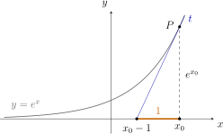
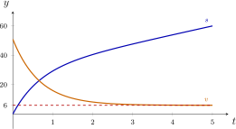

Hoofdstuk 18Verloop van exponentiële en logaritmische functies
Leerplandoelstellingen (GO! Navigator)
Gevorderde wiskunde (WD3_06.08)
-
• WD3_06.08.26 (MD 06.08.16) De leerlingen bepalen grafisch en algebraïsch limieten van functies en analyseren het asymptotisch gedrag.
-
– afbakening: continuïteit
-
– afbakening: horizontaal, verticaal en schuin asymptotisch gedrag
-
-
• WD3_06.08.28 De leerlingen berekenen de afgeleide functie van functies die zijn opgebouwd uit veeltermfuncties, rationale functies, irrationale functies, exponentiële functies, logaritmische functies, goniometrische functies en cyclometrische functies.
-
– afbakening: afleidbaarheid
-
– afbakening: rekenregels: afgeleide van een som, product, quotiënt van functies en afgeleide van een samengestelde functie (kettingregel)
-
– afbakening: regel van de l’Hôpital
-
– WD3_06.08.28.01 (MD 06.08.17) De leerlingen berekenen de afgeleide functie van functies die zijn opgebouwd uit veeltermfuncties, rationale functies, irrationale functies, exponentiële functies, logaritmische functies en goniometrische functies.
-
– WD3_06.08.28.02 De leerlingen berekenen de afgeleide functie van functies die zijn opgebouwd uit cyclometrische functies.
-
I Limieten
1 Definitie: Het getal \(e\)
\(\seteqnumber{0}{}{0}\)\begin{align*} e &:= \lim _{x\to +\infty } \left (1+\frac {1}{x}\right )^x\\ &= \lim _{x\to 0} (1+x)^{\frac {1}{x}} \end{align*}
Opmerking
Zonder definitie, voor altijd VOV \(\vov {1^\infty }\).
2 Eigenschap
Voor alle \(a\in \mathbb {R}_0^+\setminus \{1\}\) geldt:
\[ \lim _{x\to 0} \frac {\log _a(1+x)}{x} = \frac {1}{\ln a} \]
Bewijs.
\[ \begin {aligned} \lim _{x\to 0} \frac {\log _a(1+x)}{x} \quad & = \vov {\dfrac {0}{0}} & & \text {VOV} \\ & = \lim _{x\to 0} \left (\frac {1}{x}\,\log _a(1+x)\right ) \\ & = \lim _{x\to 0} \bigl (\log _a(1+x)^{1/x}\bigr ) \\ & = \log _a\!\left (\lim _{x\to 0} (1+x)^{1/x}\right ) \\ & = \log _a e \\ & = \frac {\log _e e}{\log _e a} \\ & = \frac {1}{\ln a} \end {aligned} \]
3 Bijzonder geval
\[ \lim _{x\to 0} \frac {\ln (1+x)}{x} = 1 \]
4 Standaardlimieten
\[ \begin {array}{c|c} a>1 & 0<a<1 \\ \hline \displaystyle \lim _{x\to +\infty } a^x = +\infty & \displaystyle \lim _{x\to +\infty } a^x = 0 \\[0.8em] \displaystyle \lim _{x\to -\infty } a^x = 0 & \displaystyle \lim _{x\to -\infty } a^x = +\infty \\[0.8em] \displaystyle \lim _{x\to 0} \log _a x = -\infty & \displaystyle \lim _{x\to 0} \log _a x = +\infty \\[0.8em] \displaystyle \lim _{x\to +\infty } \log _a x = +\infty & \displaystyle \lim _{x\to +\infty } \log _a x = -\infty \end {array} \]
5 Voorbeelden
Bereken de volgende limieten met de voorgaande standaardlimieten.
-
(a) \(\displaystyle \lim _{x\to +\infty }\left (1+\frac {1}{x}\right )^{3x}\).
\(\lim _{x\to +\infty }\left (1+\frac {1}{x}\right )^{3x} = e^3\)
\(\seteqnumber{0}{}{0}\)\begin{align*} \lim _{x\to +\infty }\left (1+\frac {1}{x}\right )^{3x} &= \vov {1^\infty } && \text {VOV} \\ &= \lim _{x\to +\infty }\left [\left (1+\frac {1}{x}\right )^x\right ]^3 \\ &= e^3. \end{align*}
-
(b) \(\displaystyle \lim _{x\to 0}(1+2x)^{1/x}\).
\(\lim _{x\to 0}(1+2x)^{1/x} = e^2\) We stellen \(u=2x\). Als \(x\to 0\), dan \(u\to 0\).
\(\seteqnumber{0}{}{0}\)\begin{align*} \lim _{x\to 0}(1+2x)^{1/x} &= \vov {1^\infty } && \text {VOV} \\ &= \lim _{x\to 0}(1+2x)^{\truc {2}/(\truc {2}x)} \\ &= \lim _{x\to 0}\left [(1+2x)^{1/(2x)}\right ]^2 \\ &= \lim _{u\to 0}\left [(1+u)^{1/u}\right ]^2 \\ &= e^2. \end{align*}
-
(c) \(\displaystyle \lim _{x\to 0}\frac {\ln (1+3x)}{x}\).
\(\lim _{x\to 0}\frac {\ln (1+3x)}{x} = 3\) We stellen \(u=3x\). Als \(x\to 0\), dan \(u\to 0\).
\(\seteqnumber{0}{}{0}\)\begin{align*} \lim _{x\to 0}\frac {\ln (1+3x)}{x} &= \vov {\dfrac {0}{0}} && \text {VOV} \\ &= \lim _{x\to 0}\frac {\truc {3}\ln (1+3x)}{\truc {3}x} \\ &= 3\lim _{x\to 0}\frac {\ln (1+3x)}{3x} \\ &= 3\lim _{u\to 0}\frac {\ln (1+u)}{u} \\ &= 3. \end{align*}
-
(d) \(\displaystyle \lim _{x\to 0}\frac {\log _2(1+x)}{5x}\).
\(\lim _{x\to 0}\frac {\log _2(1+x)}{5x} = \frac {1}{5\ln 2}\)
\(\seteqnumber{0}{}{0}\)\begin{align*} \lim _{x\to 0}\frac {\log _2(1+x)}{5x} &= \vov {\dfrac {0}{0}} && \text {VOV} \\ &= \frac {1}{5}\lim _{x\to 0}\frac {\log _2(1+x)}{x} \\ &= \frac {1}{5\ln 2}. \end{align*}
-
(e) \(\displaystyle \lim _{x\to -\infty }\left (\frac {1}{3}\right )^x\).
\(\lim _{x\to -\infty }\left (\frac {1}{3}\right )^x = +\infty \) Het grondtal ligt tussen \(0\) en \(1\). We kunnen ook herschrijven naar grondtal \(3\):
\[ \lim _{x\to -\infty }\left (\frac {1}{3}\right )^x = \lim _{x\to -\infty }3^{-x} = +\infty , \]
want \(-x\to +\infty \).
-
(f) \(\displaystyle \lim _{x\to +\infty }\log _{1/2}x\).
\(\lim _{x\to +\infty }\log _{1/2}x = -\infty \) Het grondtal ligt tussen \(0\) en \(1\). De bijbehorende standaardlimiet geeft
\[ \lim _{x\to +\infty }\log _{1/2}x=-\infty . \]
6 Regel van de l’Hospital
\(\seteqnumber{0}{}{0}\)\begin{align*} \lim _{x\to a} \frac {f(x)}{g(x)} &= \vov {\dfrac {0}{0}} \text { of } \vov {\dfrac {\infty }{\infty }} && \text {VOV} \\ &= \lim _{x\to a} \frac {f'(x)}{g'(x)} \quad \text {met } a\in \overline {\mathbb {R}}=[-\infty ,+\infty ]. \end{align*}
Om deze regel te kunnen gebruiken hebben we echter eerst formules voor afgeleiden van exp- en logaritmische functies nodig.
7 VBTL Oefeningen
VBTL Analyse 3: p 80 nr 3 (a tot d en f); p 82 nr 22 (a, e, f, j en s tot u)
II Afgeleide van logaritmische functies
1 Herhaling: definitie afgeleid getal
\[ f'(a) = \lim _{x\to a} \frac {f(x)-f(a)}{x-a}. \]
De letter \(a\) gebruiken wij echter voor het grondtal, dus zullen we \(f'(b)\) nemen:
\[ f'(b) = \lim _{x\to b} \frac {f(x)-f(b)}{x-b}. \]
2 Voor logaritmische functies
Neem
\[ f(x) = \log _a x. \]
Dan is
\(\seteqnumber{0}{}{0}\)\begin{align*} f'(b) &= \lim _{x\to b} \frac {\log _a x - \log _a b}{x-b} \\[0.3em] &= \lim _{x\to b} \left (\frac {1}{x-b}\,\log _a\frac {x}{b}\right ) \\[0.3em] &= \lim _{x\to b} \left (\frac {1}{x-b}\,\log _a\frac {x\truc {-b+b}}{b}\right ) \\[0.3em] &= \lim _{x\to b} \left (\frac {1}{x-b}\,\log _a\left (\frac {b}{b}+\frac {x-b}{b}\right )\right ) \\[0.3em] &= \lim _{x\to b} \left (\frac {1}{x-b}\,\log _a\left (1+\frac {x-b}{b}\right )\right ). \end{align*} Stel nu \(y = \frac {x-b}{b}\). Als \(x\to b\), dan \(y\to 0\) en dus
\(\seteqnumber{0}{}{0}\)\begin{align*} f'(b) &= \lim _{y\to 0} \left (\frac {1}{b y} \cdot \log _a(1+y)\right ) \\[0.3em] &= \frac {1}{b} \lim _{y\to 0} \frac {\log _a(1+y)}{y} \\[0.3em] &= \frac {1}{b}\cdot \frac {1}{\ln a} && \left (\lim _{x\to 0} \frac {\log _a(1+x)}{x} = \frac {1}{\ln a}\right )\\ & = \frac {1}{b\ln a}, \end{align*}
Daaruit volgt de algemene formule
\[ \boxed {(\log _a x)' = \frac {1}{x\,\ln a}} \]
3 Bijzonder geval:
\[ (\ln x)' = \frac {1}{x\ln e} = \frac {1}{x} \qquad \Rightarrow \qquad \boxed {(\ln x)' = \frac {1}{x}} \]
4 Samengestelde functies:
\[ \boxed {(\log _a f(x))' = \frac {f'(x)}{f(x)\,\ln a}} \qquad \text {en}\qquad \boxed {(\ln f(x))' = \frac {f'(x)}{f(x)}}. \]
5 Opmerking
Het afgeleide getal van \(\log _a x\) in \(b\) is de rico van de raaklijn aan de grafiek in het punt \((b,\log _a b)\).
6 Voorbeelden
Bereken de volgende afgeleiden.
-
(a) \((\log _4 x)'\).
\((\log _4 x)' = \frac {1}{x\ln 4}\)
\(\seteqnumber{0}{}{0}\)\begin{align*} (\log _4 x)' &= \frac {1}{x\ln 4}. \end{align*}
-
(b) \(\bigl (\ln (x^2-1)\bigr )'\).
\(\bigl (\ln (x^2-1)\bigr )' = \frac {2x}{x^2-1}\)
\(\seteqnumber{0}{}{0}\)\begin{align*} \bigl (\ln (x^2-1)\bigr )' &= \frac {(x^2-1)'}{x^2-1} \\ &= \frac {2x}{x^2-1}. \end{align*}
-
(c) \(\bigl (\ln \sqrt {x}\bigr )'\).
\(\bigl (\ln \sqrt {x}\bigr )' = \frac {1}{2x}\)
\(\seteqnumber{0}{}{0}\)\begin{align*} \bigl (\ln \sqrt {x}\bigr )' &= \bigl (\ln x^{1/2}\bigr )' \\ &= \Bigl (\frac 12\ln x\Bigr )' \\ &= \frac 12\cdot \frac 1x \\ &= \frac {1}{2x}. \end{align*}
-
(d) \((x\ln x - x)'\).
\((x\ln x - x)' = \ln x\)
\(\seteqnumber{0}{}{0}\)\begin{align*} (x\ln x - x)' &= (x\ln x)' - (x)' \\ &= (x)'\ln x + x\,(\ln x)' - 1 \\ &= 1\cdot \ln x + x\cdot \frac 1x - 1 \\ &= \ln x + 1 - 1 \\ &= \ln x. \end{align*}
-
(e) \((x^3\ln x)'\).
\((x^3\ln x)' = x^2(3\ln x + 1)\)
\(\seteqnumber{0}{}{0}\)\begin{align*} (x^3\ln x)' &= (x^3)'\ln x + x^3(\ln x)' \\ &= 3x^2\ln x + x^3\cdot \frac 1x \\ &= 3x^2\ln x + x^2 \\ &= x^2(3\ln x + 1). \end{align*}
-
(f) \(\left (\dfrac {\ln x}{x}\right )'\).
\(\left (\frac {\ln x}{x}\right )' = \frac {1-\ln x}{x^2}\)
\(\seteqnumber{0}{}{0}\)\begin{align*} \left (\frac {\ln x}{x}\right )' &= \frac {(\ln x)'\cdot x - \ln x\cdot (x)'}{x^2} \\ &= \frac {\dfrac 1x\cdot x - \ln x\cdot 1}{x^2} \\ &= \frac {1-\ln x}{x^2}. \end{align*}
-
(g) \(\bigl (\log _2(1+x)\bigr )'\).
\(\bigl (\log _2(1+x)\bigr )' = \frac {1}{(1+x)\ln 2}\)
\(\seteqnumber{0}{}{0}\)\begin{align*} \bigl (\log _2(1+x)\bigr )' &= \frac {(1+x)'}{(1+x)\ln 2} \\ &= \frac {1}{(1+x)\ln 2}. \end{align*}
-
(h) \(\bigl (\log _{10}(10x+1)\bigr )'\).
\(\bigl (\log _{10}(10x+1)\bigr )' = \frac {10}{(10x+1)\ln 10}\)
\(\seteqnumber{0}{}{0}\)\begin{align*} \bigl (\log _{10}(10x+1)\bigr )' &= \frac {(10x+1)'}{(10x+1)\ln 10} \\ &= \frac {10}{(10x+1)\ln 10}. \end{align*}
-
(i) \(\bigl (\ln (\sin x)\bigr )'\).
\(\bigl (\ln (\sin x)\bigr )' = \cot x\)
\(\seteqnumber{0}{}{0}\)\begin{align*} \bigl (\ln (\sin x)\bigr )' &= \frac {(\sin x)'}{\sin x} \\ &= \frac {\cos x}{\sin x} \\ &= \cot x. \end{align*}
-
(j) \(\bigl (\ln (\cos x)\bigr )'\).
\(\bigl (\ln (\cos x)\bigr )' = -\tan x\)
\(\seteqnumber{0}{}{0}\)\begin{align*} \bigl (\ln (\cos x)\bigr )' &= \frac {(\cos x)'}{\cos x} \\ &= \frac {-\sin x}{\cos x} \\ &= -\tan x. \end{align*}
-
(k) \(\bigl (\log _{10}(\tan x)\bigr )'\).
\(\bigl (\log _{10}(\tan x)\bigr )' = \frac {1}{\sin x\cos x\,\ln 10}\)
\(\seteqnumber{0}{}{0}\)\begin{align*} \bigl (\log _{10}(\tan x)\bigr )' &= \frac {(\tan x)'}{\tan x\,\ln 10} \\ &= \frac {\dfrac {1}{\cos ^2 x}}{\dfrac {\sin x}{\cos x}\,\ln 10} \\ &= \frac {1}{\cos ^2 x}\cdot \frac {\cos x}{\sin x\,\ln 10} \\ &= \frac {1}{\sin x\cos x\,\ln 10}. \end{align*}
-
(l) \(\left (\dfrac {x}{\ln x}\right )'\).
\(\left (\frac {x}{\ln x}\right )' = \frac {\ln x - 1}{(\ln x)^2}\)
\(\seteqnumber{0}{}{0}\)\begin{align*} \left (\frac {x}{\ln x}\right )' &= \frac {(x)'\ln x - x\,(\ln x)'}{(\ln x)^2} \\ &= \frac {1\cdot \ln x - x\cdot \dfrac 1x}{(\ln x)^2} \\ &= \frac {\ln x - 1}{(\ln x)^2}. \end{align*}
7 VBTL Oefeningen
VBTL Analyse 3: p 81 nr 10 (b, c, e, i tot k, m en o tot r)
III Afgeleide van exponentiële functies
1 Opstelling formules
Neem \(f(x)=a^x\). We zoeken \(f'(x)\).
\[ y = a^x \quad \Longleftrightarrow \quad \log _a y = x. \]
Differentieer naar \(x\):
\[ (\log _a y)' = (x)' \quad \Longrightarrow \quad \frac {1}{y\ln a}\,y' = 1 \quad \Longrightarrow \quad y' = y\ln a. \]
Dus
\[ (a^x)' = a^x\ln a. \]
Samengevat:
\[ \boxed {(a^x)' = a^x\ln a},\qquad \boxed {(e^x)' = e^x}, \]
\[ \boxed {(a^{f(x)})' = a^{f(x)}\ln a\,f'(x)},\qquad \boxed {(e^{f(x)})' = e^{f(x)}f'(x)}. \]
Het bijzondere van \(e\)
De afgeleide van \(a^x\) is een veelvoud van de functie zelf: \((a^x)'=\ln a\cdot a^x\). In elk punt is de helling dus evenredig met de hoogte. Enkel voor \(a=e\) is die factor \(1\). Dan is de helling in elk punt gelijk aan de hoogte.
We zien dat aan de raaklijn. In \(P\bigl (x_0,a^{x_0}\bigr )\) is
\[ t \leftrightarrow y - a^{x_0} = a^{x_0}\ln a\,(x-x_0). \]
De raaklijn snijdt de \(x\)-as waar \(y=0\):
\(\seteqnumber{0}{}{0}\)\begin{align*} -a^{x_0} &= a^{x_0}\ln a\,(x-x_0)\\ \iff \quad -1 &= \ln a\,(x-x_0)\\ \iff \quad x &= x_0-\frac {1}{\ln a}. \end{align*} Waar \(P\) ook ligt, de raaklijn snijdt de \(x\)-as altijd op afstand \(\frac {1}{\ln a}\) links van \(x_0\). Voor \(a=e\) is die afstand precies \(1\). De helling is dan \(\frac {e^{x_0}}{1}=e^{x_0}\): de hoogte zelf.

Zo is \(e^x\) de functie die gelijk is aan haar eigen afgeleide. Daarom kiezen we in de analyse \(e\) als grondtal: met \(e^x\) en \(\ln x\) valt de factor \(\ln a\) uit elke formule weg.
2 Voorbeelden
Bereken de volgende afgeleiden.
-
(a) \((10^x)'\).
\((10^x)' = 10^x\ln 10\)
\(\seteqnumber{0}{}{0}\)\begin{align*} (10^x)' &= 10^x\ln 10. \end{align*}
-
(b) \(\bigl (2\cdot 5^{x+1}\bigr )'\).
\(\bigl (2\cdot 5^{x+1}\bigr )' = 2\cdot 5^{x+1}\ln 5\)
\(\seteqnumber{0}{}{0}\)\begin{align*} \bigl (2\cdot 5^{x+1}\bigr )' &= 2\cdot \bigl (5^{x+1}\bigr )' \\ &= 2\cdot 5^{x+1}\ln 5\cdot (x+1)' \\ &= 2\cdot 5^{x+1}\ln 5. \end{align*}
-
(c) \(\bigl (e^{\ln x}\bigr )'\).
\(\bigl (e^{\ln x}\bigr )' = 1\)
\(\seteqnumber{0}{}{0}\)\begin{align*} \bigl (e^{\ln x}\bigr )' &= e^{\ln x}(\ln x)' \\ &= x\cdot \frac 1x \\ &= 1. \end{align*} Ter controle: \(e^{\ln x}=x\), dus de afgeleide is \((x)'=1\).
-
(d) \(\bigl (10^{\log _{10}(x+1)}\bigr )'\).
\(\bigl (10^{\log _{10}(x+1)}\bigr )' = 1\)
\(\seteqnumber{0}{}{0}\)\begin{align*} \bigl (10^{\log _{10}(x+1)}\bigr )' &= 10^{\log _{10}(x+1)}\ln 10\cdot \bigl (\log _{10}(x+1)\bigr )' \\ &= 10^{\log _{10}(x+1)}\ln 10\cdot \frac {1}{(x+1)\ln 10} \\ &= \frac {10^{\log _{10}(x+1)}}{x+1} \\ &= \frac {x+1}{x+1} \\ &= 1. \end{align*} Ter controle: \(10^{\log _{10}(x+1)}=x+1\), dus de afgeleide is \((x+1)'=1\).
-
(e) \(\bigl (e^{\sin x}\bigr )'\).
\(\bigl (e^{\sin x}\bigr )' = e^{\sin x}\cos x\)
\(\seteqnumber{0}{}{0}\)\begin{align*} \bigl (e^{\sin x}\bigr )' &= e^{\sin x}(\sin x)' \\ &= e^{\sin x}\cos x. \end{align*}
-
(f) \(\bigl (e^{3\cos x}\bigr )'\).
\(\bigl (e^{3\cos x}\bigr )' = -3e^{3\cos x}\sin x\)
\(\seteqnumber{0}{}{0}\)\begin{align*} \bigl (e^{3\cos x}\bigr )' &= e^{3\cos x}(3\cos x)' \\ &= e^{3\cos x}\cdot (-3\sin x) \\ &= -3e^{3\cos x}\sin x. \end{align*}
-
(g) \(\bigl (5^{\cos x}\bigr )'\).
\(\bigl (5^{\cos x}\bigr )' = -5^{\cos x}\ln 5\,\sin x\)
\(\seteqnumber{0}{}{0}\)\begin{align*} \bigl (5^{\cos x}\bigr )' &= 5^{\cos x}\ln 5\cdot (\cos x)' \\ &= 5^{\cos x}\ln 5\cdot (-\sin x) \\ &= -5^{\cos x}\ln 5\,\sin x. \end{align*}
-
(h) \(\bigl (e^{\tan x}\bigr )'\).
\(\bigl (e^{\tan x}\bigr )' = \frac {e^{\tan x}}{\cos ^2 x}\)
\(\seteqnumber{0}{}{0}\)\begin{align*} \bigl (e^{\tan x}\bigr )' &= e^{\tan x}(\tan x)' \\ &= e^{\tan x}\cdot \frac {1}{\cos ^2 x} \\ &= \frac {e^{\tan x}}{\cos ^2 x}. \end{align*}
3 VBTL Oefeningen
Afgeleiden berekenen:
VBTL Analyse 3: p 80 nr 4 (a, b, d tot k en n tot q); p 81 nr 10 (f, l en n); p 82 nr 21 (a tot e, i en k)
Limieten met de regel van de l’Hospital:
VBTL Analyse 3: p 82 nr 22 (b tot d, g tot i en k tot q)
Volledig verloop (een keuze, met ICT):
VBTL Analyse 3: p 83 nr 23 (a tot f, h tot r en t)
IV Toepassingen
1 \((\ln |x|)'\)
Aangezien een logaritme enkel gedefinieerd is voor \(\mathbb {R}_0^+\), zullen we vaak \(\ln |x|\) tegenkomen: zeker positief!
\[ |x|= \begin {cases} x & \text {als } x\in \mathbb {R}_0^+,\\ -x & \text {als } x\in \mathbb {R}_0^-. \end {cases} \]
Voor \(x\in \mathbb {R}_0^+\):
\[ (\ln |x|)' = (\ln x)' = \dfrac {1}{x}. \]
Voor \(x\in \mathbb {R}_0^-\):
\[ (\ln |x|)' = (\ln (-x))' = \dfrac {1}{-x}\cdot (-1) = \dfrac {1}{x}. \]
Dus
\[ \boxed {(\ln |x|)' = \dfrac {1}{x}}\qquad (x\neq 0) \qquad \Rightarrow \qquad \boxed {(\ln |x|)' = (\ln x)'} \]
2 \(\bigl (\ln |x+\sqrt {x^2+k^2}|\bigr )'\)
\[ \begin {aligned} \bigl (\ln |x+\sqrt {x^2+k^2}|\bigr )' &= \left (\ln \bigl (x+\sqrt {x^2+k^2}\bigr )\right )' \\ &= \frac {\bigl (x+\sqrt {x^2+k^2}\bigr )'}{x+\sqrt {x^2+k^2}} \\ &= \frac {1 + \dfrac {1}{2\sqrt {x^2+k^2}}\cdot 2x}{x+\sqrt {x^2+k^2}} \\ &= \frac {1 + \dfrac {x}{\sqrt {x^2+k^2}}}{x+\sqrt {x^2+k^2}} \\ &= \frac {\truc {\dfrac {\sqrt {x^2+k^2}}{\sqrt {x^2+k^2}}} + \dfrac {x}{\sqrt {x^2+k^2}}}{x+\sqrt {x^2+k^2}} \\ &= \frac {\dfrac {\sqrt {x^2+k^2}+x}{\sqrt {x^2+k^2}}}{x+\sqrt {x^2+k^2}} \\ &= \frac {1}{\sqrt {x^2+k^2}}. \end {aligned} \]
\[ \boxed {\bigl (\ln |x+\sqrt {x^2+k^2}|\bigr )' = \dfrac {1}{\sqrt {x^2+k^2}}} \qquad \text { en } \qquad \boxed {\bigl (\ln |f(x)+\sqrt {f(x)^2+k^2}|\bigr )' = \dfrac {f'(x)}{\sqrt {f(x)^2+k^2}}}. \]
3 VBTL Oefeningen
VBTL Analyse 3: p 80 nr 4 (m); p 81 nr 10 (a)
V Oefeningen
p80 nr7
De functie \(y = x^{\tfrac 14}\,e^{-2\sqrt {x}}\) voldoet aan de vergelijking
\[ x^2\,y'' + \frac {3}{16}y = x^q\,e^{-2\sqrt {x}} \]
met \(q\) een rationaal getal. Bereken \(q\).
Afgeleiden bepalen:
\[ \begin {aligned} y &= x^{\tfrac 14} e^{-2\sqrt {x}}. \\[0.3em] y' &= \left (x^{\tfrac 14}\right )' e^{-2\sqrt {x}} + x^{\tfrac 14} \left (e^{-2\sqrt {x}}\right )' \\[0.3em] &= \frac 14 x^{-\tfrac 34} e^{-2\sqrt {x}} + x^{\tfrac 14} e^{-2\sqrt {x}}(-2\sqrt {x})' \\[0.3em] &= \frac 14 x^{-\tfrac 34} e^{-2\sqrt {x}} - x^{\tfrac 14} e^{-2\sqrt {x}}\frac {1}{\sqrt {x}} \\[0.3em] &= \frac {1/4-\sqrt {x}}{x^{3/4}}\,e^{-2\sqrt {x}}.\\[0.3em] y'' &= \left (\frac {1/4-\sqrt {x}}{x^{3/4}}\,e^{-2\sqrt {x}}\right )' \\[0.3em] &= \frac {x-\tfrac {3}{16}}{x^{7/4}}\,e^{-2\sqrt {x}}. \end {aligned} \]
Nu vullen we dit in, in de linkerkant van de gegeven vergelijking:
\[ \begin {aligned} x^2 y'' + \frac {3}{16}y &= x^2 \cdot \frac {x-\tfrac {3}{16}}{x^{7/4}}\,e^{-2\sqrt {x}} + \frac {3}{16} x^{\tfrac 14} e^{-2\sqrt {x}} \\[0.3em] &= x^{\tfrac 14}(x-\tfrac {3}{16})e^{-2\sqrt {x}} + \frac {3}{16} x^{\tfrac 14} e^{-2\sqrt {x}} \\[0.3em] &= x^{\tfrac 14} e^{-2\sqrt {x}} \left (x-\tfrac {3}{16}+\tfrac {3}{16}\right ) \\[0.3em] &= x^{\tfrac 54} e^{-2\sqrt {x}}. \end {aligned} \]
We zien dus dat
\[ x^2 y'' + \frac {3}{16}y = x^{\tfrac 54} e^{-2\sqrt {x}}. \]
Vergelijken met de vorm \(x^q e^{-2\sqrt {x}}\) geeft meteen
\[ q = \frac 54. \]
p81 nr13
Zoek de vergelijking van de raaklijn aan de grafiek van \(f\) met
\[ f(x)=x\ln x \]
in het snijpunt met de \(x\)-as.
Eerst bepalen we het snijpunt van de grafiek met de \(x\)-as:
\[ x\ln x = 0. \]
Omdat het domein \(x>0\) is, krijgen we
\[ \ln x = 0 \;\Longrightarrow \; x=1. \]
Het snijpunt met de \(x\)-as is dus \((1,0)\).
De afgeleide van \(f\) is
\[ f'(x) = (\;x\ln x\;)' = \ln x + 1. \]
In \(x=1\) is de rico van de raaklijn
\[ f'(1) = \ln 1 + 1 = 0 + 1 = 1. \]
De vergelijking van de raaklijn door \((1,0)\) met rico \(1\) is
\[ y - 0 = 1(x-1) \quad \Longrightarrow \quad y = x - 1. \]
OPMERKING: Geen vraagstukken met in de opgave een differentiaalvergelijking. (integralen nodig)
p85 nr31
Onder bepaalde omstandigheden verloopt de afname van de luchtdruk volgens de vergelijking
\[ \frac {dp}{dh} = -\lambda \cdot p \]
met
-
• \(p\): luchtdruk (in hectopascal),
-
• \(h\): hoogte (in km) boven de zeespiegel/
De luchtdruk op zeeniveau is \(1000\) hectopascal en op \(1\) km boven de zeespiegel \(869\) hectopascal.
-
(a) Schrijf \(p\) in functie van \(h\).
-
(b) In een luchtballon kun je echter eenvoudiger de luchtdruk meten dan de hoogte. Zoek de formule die \(h\) uitdrukt in functie van \(p\).
-
(c) Toon aan dat de snelheid waarmee de hoogte (afhankelijk van \(p\)) verandert, negatief is.
We lossen eerst de differentiaalvergelijking \(\dfrac {dp}{dh}=-\lambda p\) op:
\[ \frac {1}{p}\,dp=-\lambda \,dh \quad \Rightarrow \quad \ln p = -\lambda h + C \quad \Rightarrow \quad p(h)=Ce^{-\lambda h}. \]
Uit \(p(0)=1000\) volgt \(C=1000\), dus
\[ p(h)=1000e^{-\lambda h}. \]
Verder is \(p(1)=869\), dus
\[ 869 = 1000e^{-\lambda } \quad \Rightarrow \quad e^{-\lambda }=\frac {869}{1000}. \]
Daarmee kunnen we schrijven
\[ p(h) = 1000\Bigl (\frac {869}{1000}\Bigr )^h. \]
Dit beantwoordt vraag (a).
Voor (b) schrijven we \(h\) als functie van \(p\). Uit
\[ p = 1000\Bigl (\frac {869}{1000}\Bigr )^h \]
volgt
\[ \frac {p}{1000} = \Bigl (\frac {869}{1000}\Bigr )^h \quad \Rightarrow \quad \ln \!\left (\frac {p}{1000}\right ) = h\,\ln \!\left (\frac {869}{1000}\right ), \]
dus
\[ h(p) = \frac {\ln \!\left (\dfrac {p}{1000}\right )} {\ln \!\left (\dfrac {869}{1000}\right )}. \]
Voor (c) bekijken we de afgeleide van \(h\) naar \(p\):
\[ h'(p) = \frac {d}{dp}\left ( \frac {\ln \!\left (\dfrac {p}{1000}\right )} {\ln \!\left (\dfrac {869}{1000}\right )}\right ) = \frac {1}{p\,\ln \!\left (\dfrac {869}{1000}\right )}. \]
Omdat \(\dfrac {869}{1000}<1\), is \(\ln \!\left (\dfrac {869}{1000}\right )<0\), terwijl \(p>0\) is. Bijgevolg geldt
\[ h'(p) < 0. \]
Dus de snelheid waarmee de hoogte verandert (als functie van \(p\)) is negatief.
p85 nr32
Een parachutespringer opent zijn valscherm op het moment \(t=0\) dat hij 700 m boven de grond is. De valweg wordt gegeven door
\[ s(t)=30+6t-30\cdot 0.223^{\,t}, \]
met \(s(t)\): valweg in m na \(t\) seconden.
-
(a) Geef de formule voor de snelheid van de parachutist.
De snelheid is de afgeleide van de valweg:
\[ v(t)=s'(t) =\bigl (30+6t-30\cdot 0.223^{\,t}\bigr )' =6-30\cdot (0.223^{\,t})'. \]
We gebruiken \((a^t)'=a^t\ln a\) met \(a=0.223\):
\[ v(t)=6-30\cdot 0.223^{\,t}\ln (0.223). \]
-
(b) Welke snelheid (in m/s) had de parachutist op het moment dat zijn parachute openging? Hoeveel km/h is dit?
De snelheid op het openingsmoment van het valscherm is \(v(0)\):
\[ v(0)=6-30\cdot 0.223^{\,0}\ln (0.223) =6-30\ln (0.223) \approx 51\ \text {m/s}. \]
Omzetten naar km/h:
\[ 51\ \text {m/s}\approx 51\cdot 3.6 \approx 184\ \text {km/h}. \]
-
(c) Geef de formule voor de vertraging van de parachutist.
De vertraging is de afgeleide van de snelheid:
\[ a(t)=v'(t) =\bigl (6-30\cdot 0.223^{\,t}\ln (0.223)\bigr )' =-30\ln (0.223)\cdot (0.223^{\,t})\ln (0.223). \]
Dus
\[ a(t)=-30\bigl (\ln (0.223)\bigr )^2\cdot 0.223^{\,t}. \]
-
(d) Wat is de vertraging (in m/s\(^2\)) na 1 seconde? En na 3 seconden?
Na 1 seconde:
\[ a(1)=-30\bigl (\ln (0.223)\bigr )^2\cdot 0.223 \approx -15.1\ \text {m/s}^2. \]
Na 3 seconden:
\[ a(3)=-30\bigl (\ln (0.223)\bigr )^2\cdot 0.223^{3} \approx -0.75\ \text {m/s}^2. \]
De negatieve waarden duiden op een vertraging.
-
(e) Beredeneer dat de snelheid van de parachutist afneemt tot ongeveer \(6\) m/s.
De snelheid is
\[ v(t)=6-30\cdot 0.223^{\,t}\ln (0.223). \]
Omdat \(0<0.223<1\) geldt \(\lim _{t\to \infty }0.223^{\,t}=0\). Het tweede lid in de formule voor \(v(t)\) verdwijnt dus voor grote \(t\), zodat
\[ \lim _{t\to \infty }v(t)=6\ \text {m/s}. \]
Daarom neemt de snelheid van de parachutist af tot ongeveer \(6\) m/s.
Controle met het GRM
Het GRM berekent een afgeleide numeriek in een punt. Zo controleren we de formules voor \(v(t)\) en \(a(t)\) die we zelf afgeleid hebben.
y= en voer de valweg in.
\(Y_1 = s(t)\), met \(X\) in de plaats van \(t\).
window en stel het venster in.
De eerste \(5\) seconden, en voor \(y\) wat ruimte onder \(0\) en boven \(s(5)\approx 60\).
2ndcalctrace 6:dy/dx, typ \(0\) en enter.
Het GRM geeft \(s'(0)\approx 51.02\). Onze formule geeft \(v(0)=6-30\ln (0.223)\approx 51.02\): ze klopt.
y= en voer bij \(Y_2\) de snelheid in.
\(Y_2 = v(t)\). We zetten \(\ln (0.223)\) vooraan: na ^ staat de cursor in de exponent, en zo hoort er niets meer achter \(X\).
2ndcalctrace 6:dy/dx, ▼ naar \(Y_2\), typ \(1\) en enter.
De afgeleide van \(v\) in \(t=1\) is \(a(1)\approx -15.1\), zoals in (d).
Hetzelfde met \(3\).
\(a(3)\approx -0.75\), ook zoals in (d).
graph
De valweg \(s\) stijgt steeds trager. De snelheid \(v\) daalt snel en vlakt daarna af boven de rechte \(y=6\).

2ndtablegraph
In de kolom \(Y_2\) zakt de snelheid van \(51.02\) naar \(6.025\) m/s na \(5\) seconden: ze nadert \(6\) m/s, zoals in (e).
p88 nr48, Toelatingsexamen arts 2020, vraag 8
Gegeven is de functie \(f\) met functievoorschrift
\[ f(x)=\ln (e^x+2). \]
Bepaal het snijpunt van de raaklijn aan de grafiek van \(f\) in het punt met \(x\)-coördinaat \(\ln (2)\), en de rechte met vergelijking \(y=\ln (2)\).
-
(A) \((-\ln (2),\ln (2))\)
-
(B) \((\ln (2),\ln (2))\)
-
(C) \((\ln (2),-\ln (2))\)
-
(D) \((2\ln (2),\ln (2))\)
We bepalen eerst het punt van de grafiek met \(x\)-coördinaat \(\ln (2)\):
\[ f(\ln 2) = \ln \!\bigl (e^{\ln 2}+2\bigr ) = \ln (2+2) = \ln 4 = \ln (2^2) = 2\ln 2. \]
Het raakpunt is dus \((\ln 2,2\ln 2)\).
De afgeleide van \(f\) is
\[ f'(x)=\frac {e^x}{e^x+2}, \]
dus
\[ f'(\ln 2)=\frac {e^{\ln 2}}{e^{\ln 2}+2} =\frac {2}{2+2} =\frac 12. \]
De vergelijking van de raaklijn in \((\ln 2,2\ln 2)\) is
\[ y-2\ln 2 = \frac 12\bigl (x-\ln 2\bigr ). \]
We zoeken het snijpunt met de rechte \(y=\ln 2\). Stel \(y=\ln 2\) in de raaklijnvergelijking:
\[ \ln 2 - 2\ln 2 = \frac 12\bigl (x-\ln 2\bigr ) \quad \Longrightarrow \quad -\ln 2 = \frac 12\bigl (x-\ln 2\bigr ). \]
Vermenigvuldig met \(2\):
\[ -2\ln 2 = x-\ln 2 \quad \Longrightarrow \quad x = -\ln 2. \]
Het gezochte snijpunt is dus
\[ (-\ln 2,\ln 2), \]
dus antwoord (A).